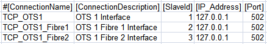
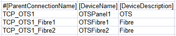
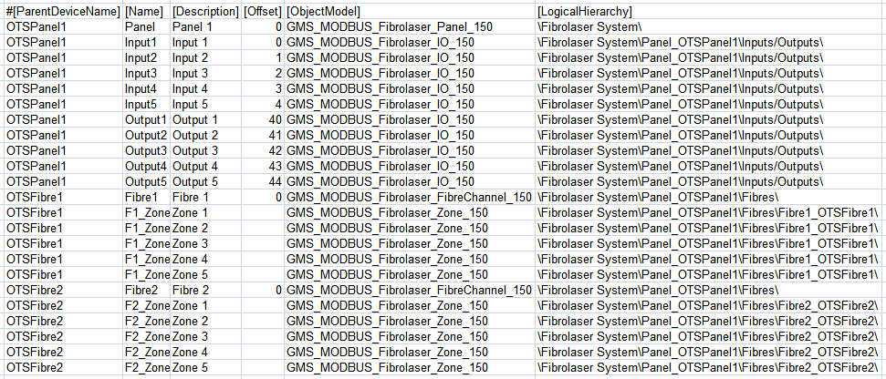

Fibrolaser III Modbus Configuration (CSV) File
To integrate a Fibrolaser III heat detection system into Desigo CC you must first prepare a textual configuration file in CSV (comma separated values) format that defines the data structure for the panel.
To do this, use Microsoft Excel or a text editor to edit the configuration file.
NOTE: Use a comma (,) as separator.
You can then use this file to import the configuration.
For reference information about the Modbus configuration CSV file, see CSV File for Modbus Device Import.
To obtain pre-configured CSV sample files to edit, contact the Technical Support team.
Having pre-configured CSV files with offsets already defined for each object, this reduces the possibility to read wrong addresses from the management station.
Pre-configured sample files can be used to create custom configuration files by adding or removing inputs/outputs for the related panel, and zones for the related fibre according to the specific configuration.
Additionally, since the device points are imported into Management View as a flat list, pre-configured sample files also provide a predefined logical view that can be used for the configuration required on the field site.
As for the logical view, pre-configured sample files can be also modified to automatically create a user-defined view out of the import. This part is not provided in pre-configured CSV files because user views strictly depend on the customer’s requirements that can be easily added.
Fibrolaser III Modbus Configuration File Sections
Section | Description |
[Connections] | Communication channels between Fibrolaser and Desigo CC. 1 interface for each device must be defined. |
[Devices] | OTS panel device and fibre channels. Each fibre channel is represented as independent device. |
[Points] | Physical points. |
Fibrolaser III Connections Data
The [Connections] section comprises the following data:
Data | Description |
[ConnectionName] | Interface name. Special characters are not allowed. Fibres InterfaceName must abide be the following naming convention: TCP_OTS<x>_Fibre<y>
And so on. NOTE: |
[ConnectionDescription] | Interface description to display in System Browser. |
[SlaveId] | Fibrolaser Modbus subordinate addresses. One subordinate address for the OTS Panel and one for each Fibre is expected. For example:
|
[IP_Address] | Interface IP address. |
[Port] | TCP Modbus port. Default value: 502. |
[Alias] | Not used. |
[FunctionName] | Not used. |
[Discipline ID] | Not used. |
[Subdiscipline ID] | Not used. |
[Type ID] | Not used. |
[Subtype ID] | Not used. |


The base Unit Identifier for the OTS panel must be set in the FibroManager configuration tool. The fibres automatically take the next continuous IDs. In the example above, the Unit Identifier for the OTS Panel was set to 1.
As mentioned in the [InterfaceName] section in the table above, any additional fibre in the configuration file requires a specific Interface entry, where its [SlaveId] is defined. The IP addresses and TCP Port must be the same as the one configured for the OTS device.

Abiding by naming conventions is essential
Abiding by the above-mentioned naming convention for fibres interfaces is mandatory for the Modbus addresses to work properly for zones.
Fibrolaser III Devices Data
The [Devices] section comprises the following data:
Data | Description |
[ParentConnectionName] | Name of the interface assigned to this device. |
[DeviceName] | Device name. |
[DeviceDescription] | Device description to display in System Browser. |
[ObjectModel] | Not used. |
[Alias] | Not used. |
[Function Name] | Not used. |
[Discipline ID] | Not used. |
[Subdiscipline ID] | Not used. |
[Type ID] | Not used. |
[Subtype ID] | Not used. |
[LogicalHierarchy] | Not used. |
[UserHierarchy] | Not used. |

Fibrolaser III Points Data
The [Points] section comprises the following data:
Data | Description |
[ParentDeviceName] | Name of the device to which the point is connected. |
[Name] | Point name. Special characters are not allowed. |
[Description] | Point description to display in System Browser. |
[FunctionCode] | Not used. |
[Offset] | Used in combination with the import rules table to achieve the correct value of the register. The following rules apply to Fibrolaser CSV configuration files:
The following Inputs use consecutive offsets (Input 2 -> 1, Input 3 -> 2, and so on). Max Offset for Inputs is 39.
The following Outputs use consecutive offsets (Output 2 -> 41, Output 3 -> 42, and so on). Max Offset for Outputs is 145.
The correct register is set during the driver restart. |
[SubIndex] | Not used. |
[DataType] | Not used. |
[Direction] | Not used. |
[Object Model] | Name of the object model linked to this point.
|
[Property] | Not used. |
[Alias] | Not used. |
[Function] | Not used. This field is optional . Since no functions are configured for Fibrolaser, [Function] is not configured in the CSV currently. |
[Discipline ID] | Not used. |
[Subdiscipline ID] | Not used. |
[Type ID] | Not used. |
[Subtype ID] | Not used. |
[Min] | Not used. |
[Max] | Not used. |
[MinRaw] | Not used. |
[MaxRaw] | Not used. |
[MinEng] | Not used. |
[MaxEng] | Not used. |
[Resolution] | Not used. |
[Unit] | Not used. |
[StateText] | Not used. |
[AlarmClass] | Not used. |
[AlarmType] | Not used. |
[AlarmValue] | Not used. |
[EventText] | Not used. |
[NormalText] | Not used. |
[UpperHysteresis] | Not used. |
[LowerHysteresis] | Not used. |
[LogicalHierarchy] | Used to create a hierarchy in the logical view. |
[UserHierarchy] | Used to create a hierarchy in the user-defined view. |
